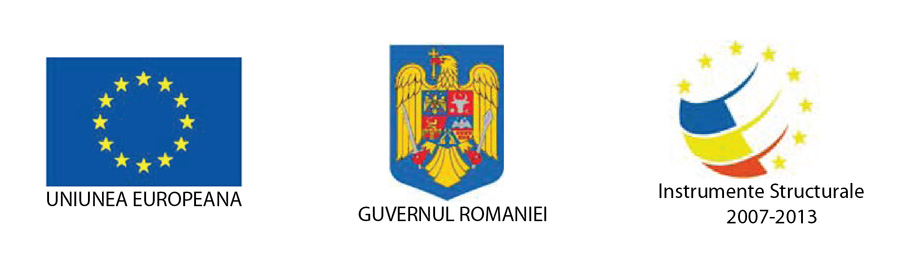
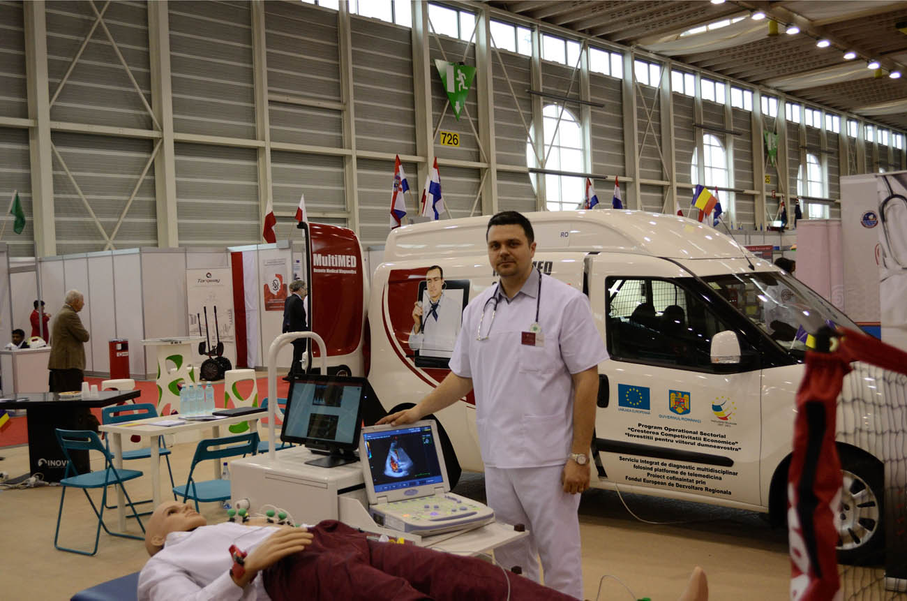
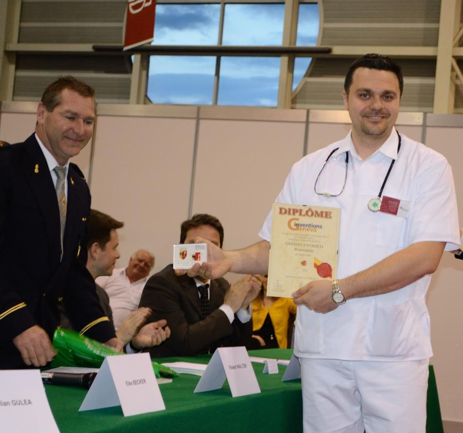

Programul Operational Sectorial "Cresterea Competitivitatii Economice"
cofinantat prin Fondul European de Dezvoltare Regionala
"Investitii pentru viitorul dumneavoastra"
cofinantat prin Fondul European de Dezvoltare Regionala
"Investitii pentru viitorul dumneavoastra"
Comunicat de presa
Derulare proiect "Serviciu integrat de diagnostic multidisciplinar folosind platforme de telemedicina / MultiMED",
Otopeni, Ilfov, 09.04.2014
SC GNOSIS EVOMED SRL, cu sediul in Otopeni, str. Steaua Rosie nr. 31, bl. A, et. 3, ap. 13, deruleaza, incepand cu data de
01.08.2013, proiectul "Serviciu integrat de diagnostic multidisciplinar folosind platforme de telemedicina",
acronim MultiMED, ID 1714, cofinantat prin Fondul European de Dezvoltare Regionala, in baza contractului de
finantare incheiat cu Ministerul Educatiei Nationale in calitate de Organism Intermediar (OI),
in numele si pentru Ministerul Economiei in calitate de Autoritate de Management (AM).
Valoarea totala a proiectului este de 4.809.812 lei, din care asistenta financiara nerambursabila este de 4.499.977 lei.
Proiectul se implementeaza in localitatea OTOPENI, jud. ILFOV, pe o durata de 15 de luni.

Obiectivul general al proiectului il constituie dezvoltarea unui serviciu de diagnostic si tratament pornind de la brevetul de inregistrat la OSIM cu nr. A/00630/30.08.2012 intitulat "Metoda de diagnostic complet prin integrarea on-line a unui panel de specialitati medicale ce interactioneaza in timp real si sistem necesar pentru implementare", inregistrat international la WIPO cu titlul "Complete diagnostic method and implementation system by on-line integration of a real time interacting panel of medical specialities", nr. PCT/RO2012/000029.
Gnosis Evomed a reusit sa adjudece la cea de-a 42 editie a Targului International de Inventica de la Geneva, premiul special al serviciului de urgenta si siguranta al orasului Geneva, pentru aceasta platforma de telemedicina inovativa, care permite realizarea si interpretarea analizelor si investigatiilor medicale la domiciliul pacientului, de catre o echipa multidisciplinara de medici specialisti, care se afla la distanta si care utilizeaza o aplicatie specializata ce ruleaza pe o tableta pentru a vizualiza, interpreta si discuta rezultatele investigatiilor si analizelor medicale si pentru a stabili in consens un diagnostic si un tratament adecvat.
Inventia da o solutie eficienta atat din perspectiva pacientului care primeste un diagnostic si un tratament in cel mai scurt timp posibil la domiciliu, cat si din perspectiva prestatorului de servicii medicale care eficientizeaza costurile, prin utilizarea resurselor umane acolo unde sunt disponibile.
Platforma este integrata cu autospeciale de telemedicina care, pe langa infrastructura IT si de comunicatii, contin echivalentul a cate unui mic spital in ceea ce priveste tipul si numarul de echipamente medicale de explorari functionale si analize, care sunt utilizate de catre personal medical specializat ce se deplaseaza la domiciliul pacientului.
Aplicatiile pentru aceasta platforma sunt multiple, in primul rand in Romania poate servi ca o completare in serviciile operatorilor publici sau privati de sanatate, in zonele in care clinicile lipsesc, sunt mici sau sunt slab dotate. O categorie aparte de pacienti o reprezinta persoanele greu deplasabile (precum batranii sau persoanele cu handicap locomotor) pentru care acest serviciu medical inovativ conduce la o crestere semnificativa a calitatii vietii. O alta aplicatie este de tip umanitar, pentru tarile subdezvoltate unde infrastructura medicala lipseste cu desavarsire, unde nu exista bani pentru constructia de spitale si medicii sunt foarte putini. In astfel de cazuri, inventia poate aduce in acele zone, cu minim de investitie financiara si umana, medici specialisti care pot contribui de la distanta la stabilirea diagnosticelor.

Datorita versatilitatii si aplicabilitatii in zona diagnozei si tratamentului bolnavilor cronici, serviciul de siguranta si urgenta a orasului Geneva (echivalentul seviciului SMURD din Romania) a apreciat in mod deosebit contributia majora pe care o poate avea aceasta inventie la imbunatatirea calitatii vietii pacientilor prin umplerea unui gol de servicii medicale pentru care exista cerere si care acum este partial satisfacuta de serviciile de urgenta medicala, care astfel sunt deturnate de la scopul lor de a salva vietii, consumand timp in deplasari la domicilu pentru solicitari ce nu intrunesc criteriile unei urgente medicale.
Inventia a starnit interes comercial deosebit din partea societatilor de asigurari elvetiene, care si-ar putea reduce costurile si creste cifra de afaceri prin ofertarea acestui serviciu medical cu valoare adaugata mare catre clientii lor.
Detalii suplimentare puteti obtine de la:
Andrei Valentin MANU-MARIN - director proiect
Tel 0741134789, Fax 0378105635, office@evo-med.ro
Pentru informatii detaliate despre celelalte programe cofinantate de Uniunea Europeana, va invitam sa vizitati www.fonduri-ue.ro
"Continutul acestui material nu reprezinta in mod obligatoriu pozitia oficiala a Uniunii Europene sau a Guvernului Romaniei"